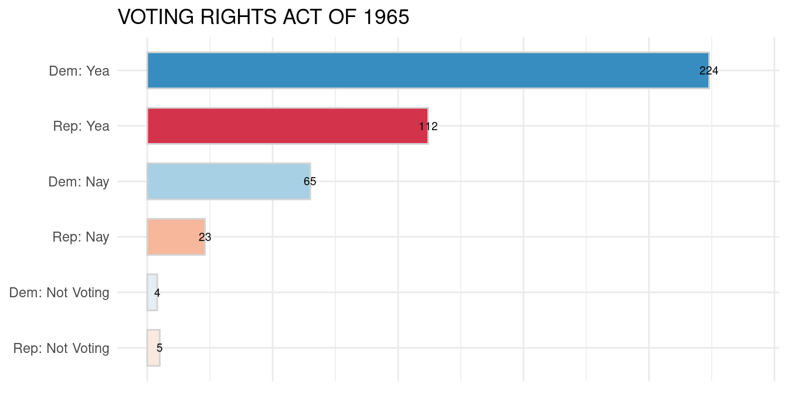
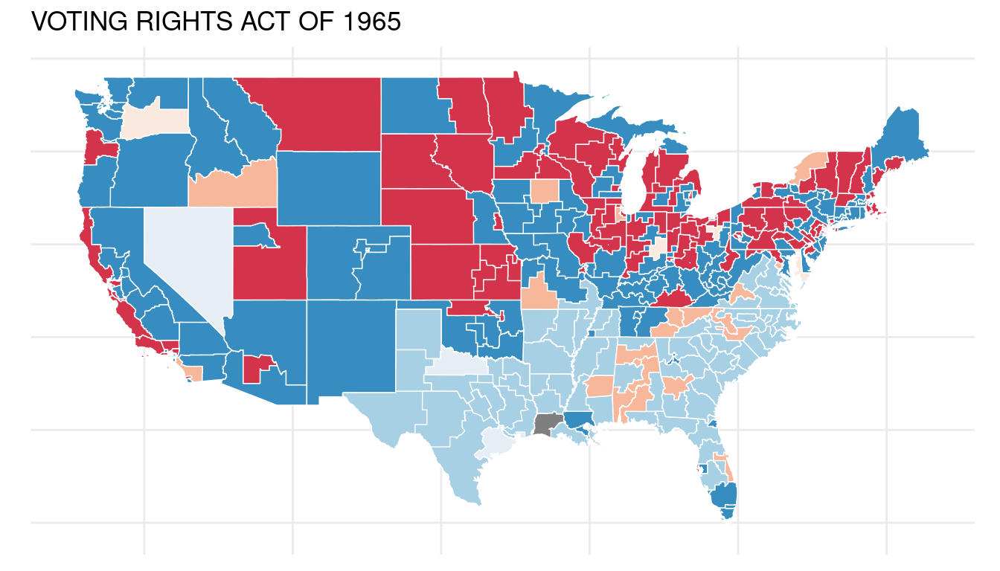
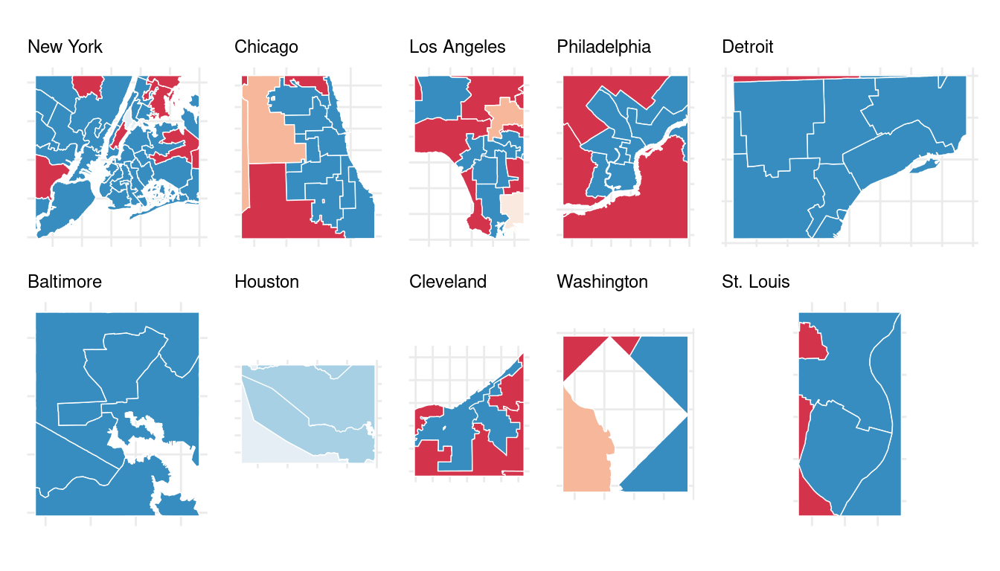
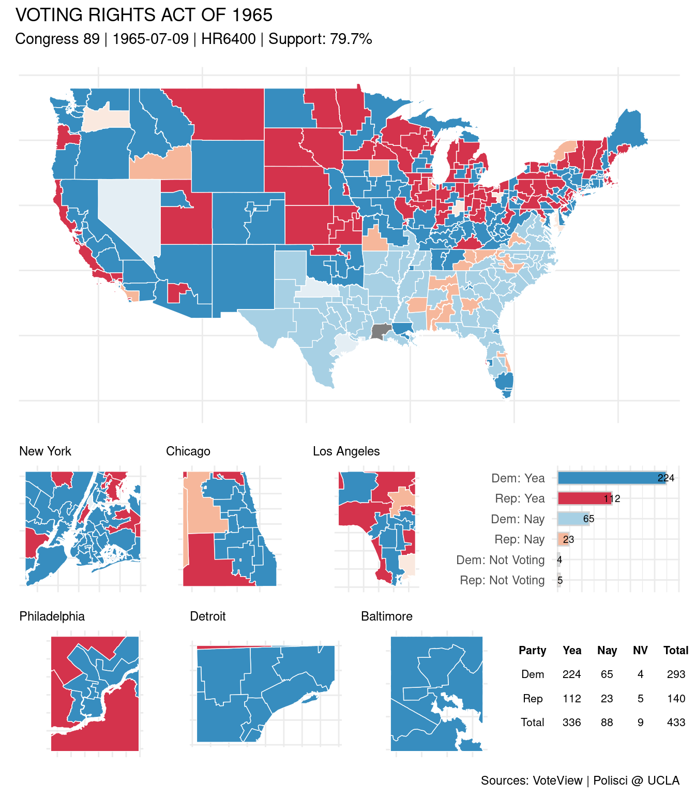
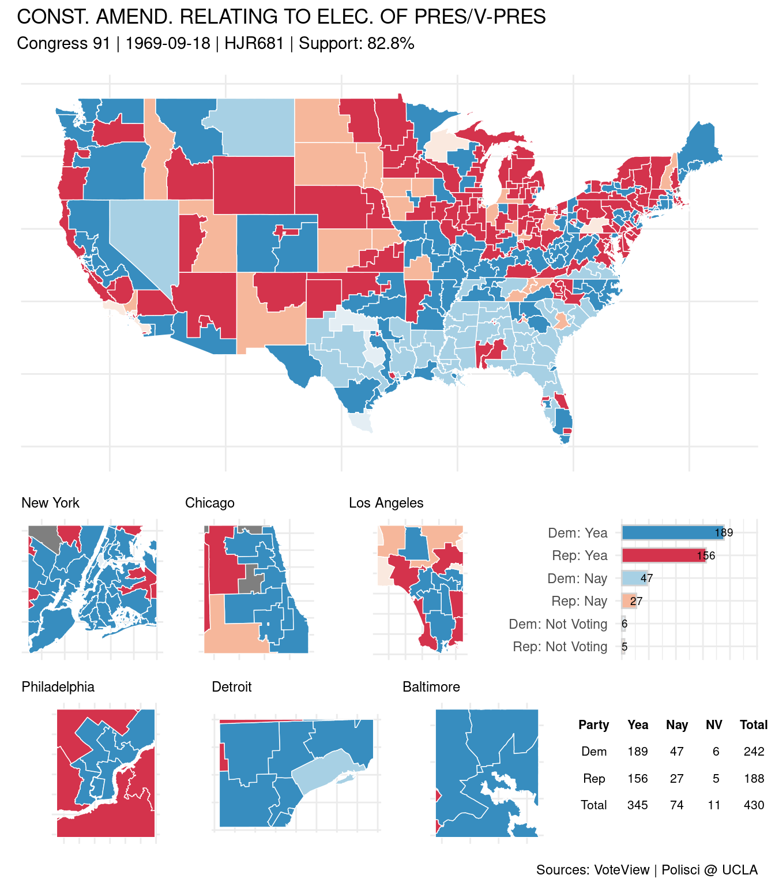

# devtools::install_github("voteview/Rvoteview")
library(patchwork)
library(tidyverse)
library(tigris); options(tigris_use_cache = TRUE, tigris_class = "sf")
nonx <- c('78', '69', '66', '72', '60', '15', '02')
states <- tigris::states(cb = TRUE) %>%
data.frame() %>%
select(STATEFP, STUSPS) %>%
rename(state_abbrev = STUSPS)Methods for mapping with R &
ggplot, in the context of visualizing historical roll calls from the US House of Representatives. Roll call data accessed via VoteView and the RVoteview package (Jeffrey et al. 2020); shapefiles for historical US Congressional Districts downloaded from the Political Science Dept @ UCLA (Lewis et al. 2013). Visual summary via thepatchworkpackage.
Here we use as examples the Voting Rights Act of 1965 and the Bayh–Celler amendment (circa 1969), a proposed amendment that would have replaced the Electoral College with a system based on the popular vote.
1 Historical urban centers
Most populous US cities by decade, from 1790 to 2010; scraped from Wikipedia. For zooming-in on district roll call results for, eg, the ten most populous cities during a given congress.
wiki <- 'https://en.wikipedia.org/wiki/List_of_most_populous_cities_in_the_United_States_by_decade'
decade <- seq(from = 1780, to = 2010, by = 10)
pops_list <- xml2::read_html(wiki) %>%
rvest::html_nodes("table") %>%
rvest::html_table(fill = TRUE)
pops <- lapply(2:24, function(x) {
y <- pops_list[[x]] %>%
select(1:4) %>%
mutate(decade = decade[x])
colnames(y) <- c('rank', 'city', 'state', 'pop', 'decade')
return(y) }) %>%
bind_rows() %>%
mutate(pop = as.integer(gsub("[^0-9]", "", pop)))Most populated US cities circa 1800:
| rank | city | state | pop | decade |
|---|---|---|---|---|
| 1 | New York | New York | 60514 | 1800 |
| 2 | Philadelphia | Pennsylvania | 41220 | 1800 |
| 3 | Baltimore | Maryland | 26514 | 1800 |
| 4 | Boston | Massachusetts | 24937 | 1800 |
| 5 | Charleston | South Carolina | 18824 | 1800 |
| 6 | Northern Liberties | Pennsylvania | 10718 | 1800 |
| 7 | Southwark | Pennsylvania | 9621 | 1800 |
| 8 | Salem | Massachusetts | 9457 | 1800 |
| 9 | Providence | Rhode Island | 7614 | 1800 |
| 10 | Norfolk | Virginia | 6926 | 1800 |
2 Historical congressional districts
Again, via the folks at the Political Science Dept @ UCLA. The Voting Rights Act of 1965 was passed during the 89th congress; a local copy of the shapefile for this congress is loaded below.
fname <- 'districts089'
cd_sf <- sf::st_read(dsn = paste0(cd_directory, fname),
layer = fname,
quiet = TRUE) %>%
mutate(STATEFP = substr(ID, 2, 3),
district_code = as.numeric(substr(ID, 11, 12))) %>%
left_join(states, by = "STATEFP") %>%
filter(!STATEFP %in% nonx) %>%
select(STATEFP, state_abbrev, district_code) 3 VoteView roll call data
Downloading roll call data for a specific bill via RVoteview requires a bit of trial and error; different bill versions and vote types complicate things for the layman.
vra <- Rvoteview::voteview_search('("VOTING RIGHTS ACT OF 1965") AND (congress:89)
AND (chamber:house)') %>%
filter( date == '1965-07-09') %>%
janitor::clean_names()
votes <- Rvoteview::voteview_download(vra$id)
names(votes) <- gsub('\\.', '_', names(votes))A quick re-structure of the roll call output:
big_votes <- votes$legis_long_dynamic %>%
left_join(votes$votes_long, by = c("id", "icpsr")) %>%
filter(!grepl('POTUS', cqlabel)) %>%
group_by(state_abbrev) %>%
mutate(n = length(district_code)) %>%
ungroup() %>%
mutate(avote = case_when(vote %in% c(1:3) ~ 'Yea',
vote %in% c(4:6) ~ 'Nay',
vote %in% c(7:9) ~ 'Not Voting'),
party_code = case_when(party_code == 100 ~ 'Dem',
party_code == 200 ~ 'Rep' ),
Party_Member_Vote = paste0(party_code, ': ', avote),
## fix at-large --
district_code = ifelse(district_code %in% c(98, 99), 0, district_code),
district_code = ifelse(n == 1 & district_code == 1, 0, district_code),
district_code = as.integer(district_code)) %>%
select(-n)
#Members who represent historical “at-large” districts are
##assigned 99, 98, or 1 in various circumstances. Per VoteView.4 Roll call stats
big_votes$Party_Member_Vote <- factor(big_votes$Party_Member_Vote)
big_votes$Party_Member_Vote <-
factor(big_votes$Party_Member_Vote,
levels(big_votes$Party_Member_Vote)[c(3,6,1,4,2,5)])4.1 Results
summary <- big_votes %>%
group_by(party_code, avote) %>%
count() %>%
spread(avote, n) %>%
janitor::adorn_totals(where = c('row', 'col')) %>%
rename(Party = party_code,
NV = `Not Voting`) %>%
select(Party, Yea, Nay, NV, Total)| Party | Yea | Nay | NV | Total |
|---|---|---|---|---|
| Dem | 224 | 65 | 4 | 293 |
| Rep | 112 | 23 | 5 | 140 |
| Total | 336 | 88 | 9 | 433 |
4.2 By party affiliation
roll <- big_votes %>%
group_by(Party_Member_Vote) %>%
count() %>%
ungroup() %>%
rename(Vote = Party_Member_Vote)
rsum <- roll %>%
ggplot(aes(x=Vote, y=n, fill= Vote, label = n)) +
geom_col(width=.65, color = 'lightgray') +
geom_text(size = 2.5) +
wnomadds::scale_color_rollcall(aesthetics = c("fill")) +
scale_x_discrete(limits = rev(levels(roll$Vote)))+
coord_flip() +
ylim (0, 240) +
theme_minimal() +
theme(axis.title.x=element_blank(),
axis.text.x=element_blank(),
axis.title.y=element_blank(),
#axis.text.y=element_blank(),
legend.position = 'none')
rsum + ggtitle(vra$short_description)
4.3 By congressional district
cd_sf_w_rolls <- cd_sf %>%
left_join(big_votes, by = c("state_abbrev", "district_code"))
main1 <- cd_sf_w_rolls %>%
ggplot() +
geom_sf(aes(fill = Party_Member_Vote),
color = 'white',
size = .25) +
wnomadds::scale_fill_rollcall() +
theme_minimal() +
theme(axis.title.x=element_blank(),
axis.text.x=element_blank(),
axis.title.y=element_blank(),
axis.text.y=element_blank(),
legend.position = 'none') # +
main1 + ggtitle(vra$short_description)
5 Zooming in to urban centers
A zoom function for closer inspection of roll call results in urban areas. The sub_geo parameter is used to specify a vector of city/state pairs (eg, “Chicago, Illinois”) to be geocoded via the tmaptools::geocode_OSM function. The geo parameter specifies the full map – as sf object.
maps_get_minis <- function(sub_geos, geo){
lapply(sub_geos, function(x) {
lc <- tmaptools::geocode_OSM (q = x, as.sf = T)
lc$bbox <- sf::st_set_crs(lc$bbox, sf::st_crs(geo))
cropped <- sf::st_crop(geo, lc$bbox)
ggplot() + geom_sf(data = cropped,
aes(fill = Party_Member_Vote),
color = 'white', size = .25) +
# ggsflabel::geom_sf_text_repel(data = cropped,
# aes(label = district_code),
# size = 2.2) +
wnomadds::scale_fill_rollcall() +
theme_minimal() +
theme(axis.title.x=element_blank(),
axis.text.x=element_blank(),
axis.title.y=element_blank(),
axis.text.y=element_blank(),
plot.title = element_text(size=9),
legend.position = 'none') +
ggtitle(gsub(',.*$', '', x)) })
}5.1 Coordinates
# x <- 'Albuquerque, New Mexico'
pops1 <- pops %>%
filter(decade == paste0(gsub('.-.*$', '', vra$date), 0)) %>%
arrange(desc(pop)) %>%
mutate(locations = paste0(city, ', ', state)) %>%
slice(1:10)
sub_maps <- maps_get_minis(geo = cd_sf_w_rolls, sub_geos = pops1$locations)5.2 Zooms
Roll call results for the VRA (1965) – zoomed in to the ten most populous US cities during the 1960s.
patchwork::wrap_plots(sub_maps, nrow = 2)
6 A patchwork perspective
t2 <- gridExtra::tableGrob(summary,
rows = NULL,
theme = gridExtra::ttheme_minimal(base_size = 8))
p0 <- sub_maps[[1]] + sub_maps[[2]] + sub_maps[[3]] +
rsum + patchwork::plot_layout(nrow = 1, widths = c(1,1,1,1))
p1 <- sub_maps[[4]] + sub_maps[[5]] + sub_maps[[6]] +
t2 + patchwork::plot_layout(nrow = 1, widths = c(1,1,1,1))
p2 <- p0/p1 + patchwork::plot_layout(nrow = 2)#, heights = c(4, 1))main1 / p2 + patchwork::plot_layout(ncol = 1, heights = c(5, 4)) +
plot_annotation(
title = vra$short_description,
subtitle = paste0('Congress ', vra$congress, ' | ',
vra$date, ' | ', vra$bill_number, ' | ',
'Support: ', round(vra$support, 1), '%'),
caption = 'Sources: VoteView | Polisci @ UCLA')
7 On the popular vote
Per code above, we can create a simple & reproducible work-flow for quickly exploring historical roll calls in the US Congress. For the Bayh–Celler amendment (circa 1969), then, we (down-) load the congressional district shapefile for the 91st congress from UCLA, and re-query RVoteview.

References
Jeffrey, Lewis, B Keith Poole, Howard Rosenthal, Adam Boche, Aaron Rudkin, and Luke Sonnet. 2020. “Voteview: Congressional Roll-Call Votes Database.”
Lewis, Jeffrey B, Brandon DeVine, Lincoln Pitcher, and Kenneth C Martis. 2013. “Digital Boundary Definitions of United States Congressional Districts, 1789-2012.” Data File and Code Book.